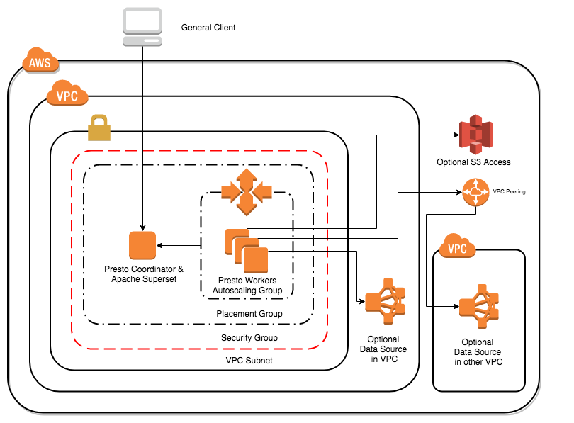

Overview#
Starburst Enterprise platform (SEP) is available on the AWS Marketplace. It integrates the reliable, scalable, and cost-effective cloud computing services provided by Amazon with the power of the fastest growing distributed query engine in the industry.
Through the use of SEP’s CloudFormation template and SEP AMI, SEP on AWS allows you to run analytic queries across distinct data sources of varying sizes via SEP clusters. Within a single query, you can access multiple data stores, allowing for the analysis of data across your entire organization. In minutes, you can provision from small to large clusters of compute instances and leverage the power of SEP’s parallelism.
At its core, SEP is architected to bring your organization faster query processing and thus greater efficiencies and cost-effectiveness. Simply create your cluster and begin querying to witness how SEP can impact your organization’s big data query functionality and bottom line.
Try SEP on AWS Marketplace!
Releases and software#
Starburst Enterprise#
SEP Overview on AWS Marketplace is always based on our latest release.
Check out our Release notes for more detailed and up to date information.
Available deployment options#
You can deploy both single node AMIs and multi-node clusters via CFTs.
You should ensure to manage all configuration of your cluster with the CloudFormation Template (CFT). Using other tools might interfere with the templates and cause misconfiguration with wrong behavior and performance issues.
Single node AMI#
An Amazon Machine Image (AMI) provides the information required to launch an instance or a virtual server. SEP makes launching instances easy with our custom SEP AMI. Simply choose your preferred instance type, specify configuration details and other instance specifications, and you are ready to launch. Deploying a single instance from our SEP AMI allows you to easily experience the power of SEP without expending resources on installation or configuration.
CloudFormation template#
AWS CloudFormation is a service that we leverage to help set up AWS resources for a SEP cluster so that you can spend less time managing said resources and more time focusing on your applications that run in AWS. Employing our template helps to describe all the AWS resources that you need, such as Amazon EC2 compute instances, and AWS CloudFormation then takes care of provisioning and configuring those resources for you. SEP’s CloudFormation template for SEP offers quick provisioning of SEP clusters with configurable specifications to fit your application’s needs. The provided CloudFormation template provisions a SEP cluster by launching multiple instances of the SEP AMI. Moreover, the CloudFormation template automatically configures SEP or allows for you to customize your SEP cluster configurations easily.
Available regions#
SEP offers the following regions on AWS:
Region Code |
Region Name |
|---|---|
us-east-1 |
US East (N. Virginia) |
us-east-2 |
US East (Ohio) |
us-west-1 |
US West (N. California) |
us-west-2 |
US West (Oregon) |
ca-central-1 |
Canada (Central) |
eu-central-1 |
EU (Frankfurt) |
eu-west-1 |
EU (Ireland) |
eu-west-2 |
EU (London) |
eu-west-3 |
EU (Paris) |
ap-northeast-1 |
Asia Pacific (Tokyo) |
ap-northeast-2 |
Asia Pacific (Seoul) |
ap-southeast-1 |
Asia Pacific (Singapore) |
ap-southeast-2 |
Asia Pacific (Sydney) |
ap-south-1 |
Asia Pacific (Mumbai) |
sa-east-1 |
South America (São Paulo) |
AWS GovCloud#
SEP includes support for AWS GovCloud deployments with the standard configuration files. The following regions can be used:
us-gov-west-1us-gov-east-1
If you query data in S3, potentially with metadata in AWS Glue, you can enforce that only data and metadata in the same region can be queried, with the following setting in your catalog properties file:
hive.s3.pin-client-to-current-region=true
SEP cluster design for AWS#
Typically, an enterprise application comprises many stateless microservices, each of which can be run on a small instance. SEP’s exceptional performance comes from its powerful query optimization engine, which expects all nodes to be identically sized for query planning. It also depends on each node to have large amounts of memory, to allow parallel processing within a node as well as processing of large amounts of data per node.
Once work is divided up among worker nodes, it is not redirected if a node dies, as this would obviate any performance gains. SEP coordinator and worker nodes are therefore stateful, and by design rely on fewer, larger nodes.
Ideally SEP runs within a namespace dedicated to it and it alone. Separate pods can be defined for worker nodes and coordinator nodes in that namespace, and taints and tolerations can be defined for node selection in SEP.
You must review the SEP AWS CFT requirements to ensure that you have the correct credentials in place and understand sizing requirements.
Reference the following information to help choose your optimal instance type for your specific compute, memory, and storage needs.
CPU:memory ratio#
Generally, you should favor clusters with a higher CPU/memory ratio, as SEP is usually bound by CPU. However, machines with larger memory (e.g., r4.8xlarge, r4.16xlarge) are favorable, if one or more of the following cases hold true.
Queries are failing because of exceeding node memory limits.
There is high query concurrency and queries are executing in the reserved memory pool.
A large number of nodes with lower memory and a higher number of CPUs is required because maximum query memory is very high.
Your can observer query skewness issues.
SEP is not bounded by CPU, but other factors such as storage on S3.
Instance types#
SEP can use x86 as well as Graviton EC2 instance types.
Instance family |
Category |
CPU/memory ratio |
Use case |
|---|---|---|---|
c5 (x86), C6g (Graviton) |
Compute |
High |
|
m5 (x86), M6g (Graviton) |
General |
Moderate |
|
r5 (x86), R6g (Graviton) |
Memory |
Low |
|
Note
For cost-efficiency use the smallest cluster possible that allows for queries to pass (e.g., because of memory requirements). However, if your cluster is bound by some resource (e.g., CPU) choose nodes with the highest ratio between that resource and other resources (e.g., for CPU bound queries choose nodes with highest CPU/memory ratio).
SEP cloud architecture#
General components and descriptions#
SEP is a distributed system that runs on one or more machines to form cluster.
When using SEP’s CloudFormation template, a typical alongside various other complex components. Following is a list of the involved components:
Command line interface client
The command line interface is used to send an SQL query to SEP. This client is installed on the same machine as the coordinator by default. It can also be installed and used on a different machine that has access to the SEP coordinator via HTTP.
Coordinator
The coordinator is provisioned on an EC2 instance and is responsible for parsing the SQL queries as well as analyzing, planning, and scheduling their execution.
Workers and auto scaling group
The workers are provisioned on EC2 instances that comprise the remainder of the cluster and are responsible for executing the SQL queries, such as aggregating data, and delivering the result to the client.
The worker nodes belong to an auto scaling group for the purpose of instance scaling and management. An auto scaling group starts by launching enough EC2 instances to meet its desired capacity and continues to maintain the capacity by scaling up or down as needed.
Placement group
Your EC2 instances are contained within placement groups. When creating a SEP cluster, instances are launched in a placement group, which determines how they are placed on the underlying hardware. This allows for a low-latency network between the SEP nodes.
Security group
Your EC2 instances are contained within one or more security groups – a virtual firewall that controls the traffic for one or more instances. When you create your cluster, you associate one or more security groups with it. This includes the specification and addition of rules to each security group that allow traffic to or from its associated instances.
VPC subnet
Your cluster is launched within your virtual private cloud subnet; a subset of the overarching virtual network dedicated to a specific availability zone – isolated from failures in other zones.
VPC
Your VPC subnet is contained within a larger network entity known as the virtual private cloud (VPC). The VPC is a virtual network dedicated to your AWS account and is logically isolated from other virtual networks in the AWS Cloud. As mentioned above it is broken down into availability zones or regions.
Diagram#
The illustration below depicts the above components of a SEP cluster in the AWS infrastructure.
{kind=link}